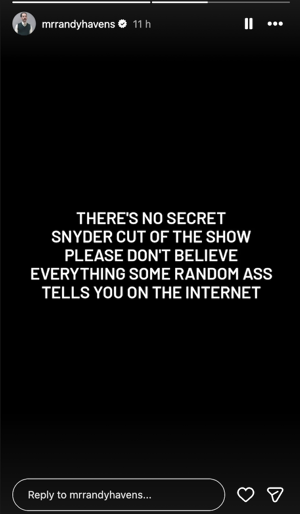
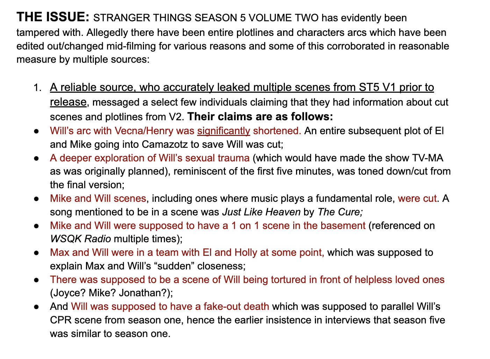
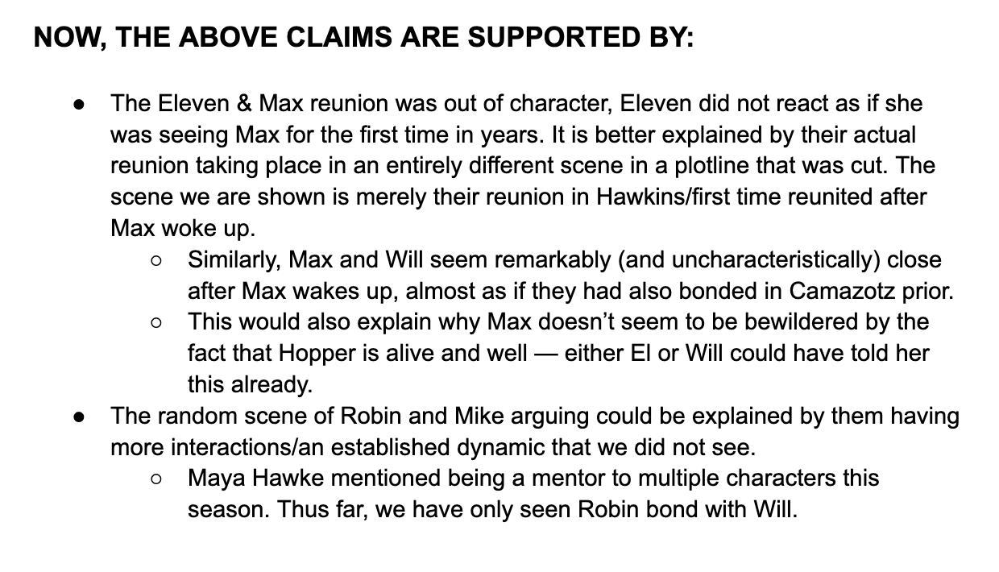
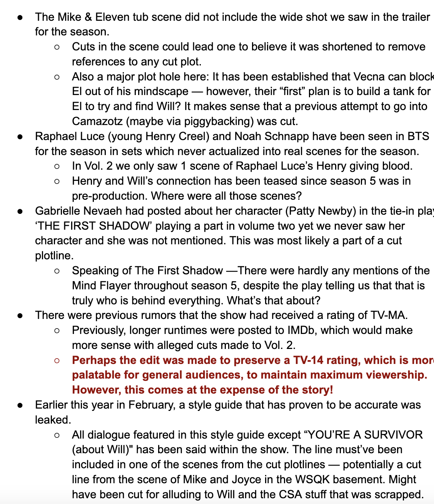
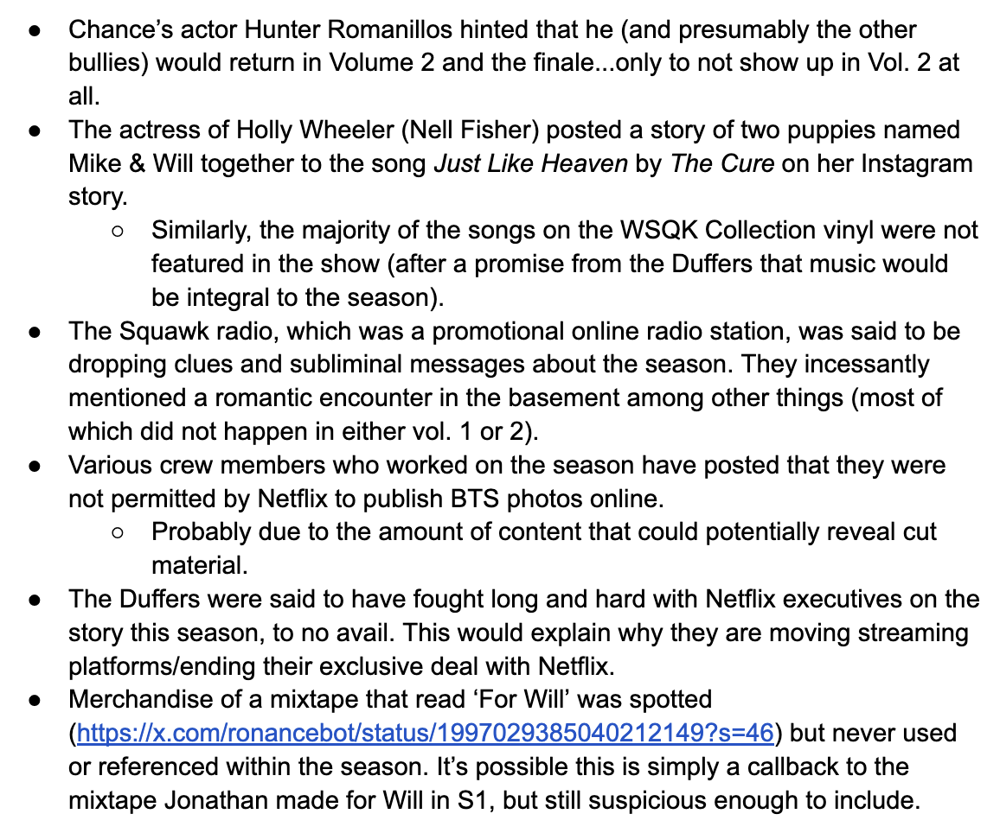
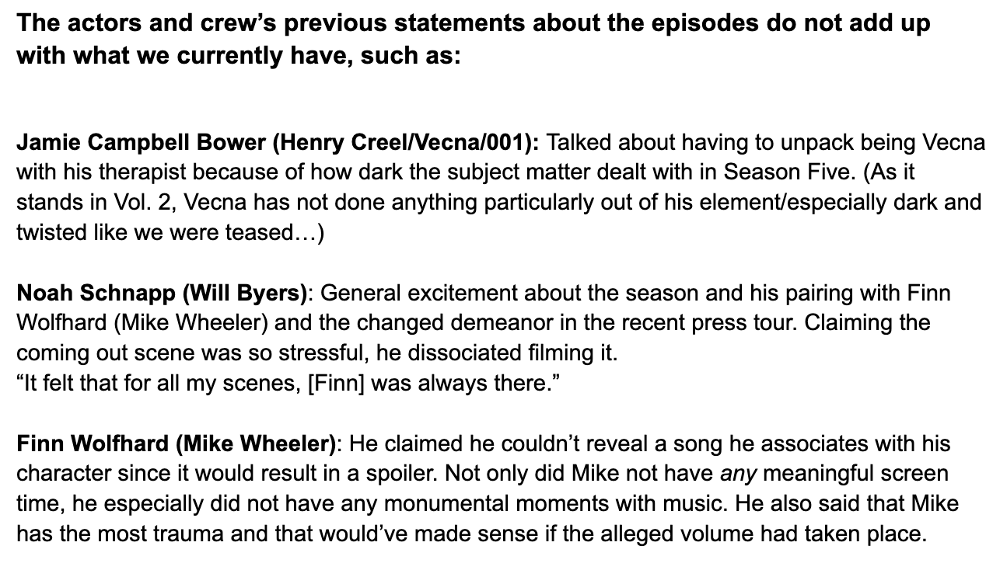
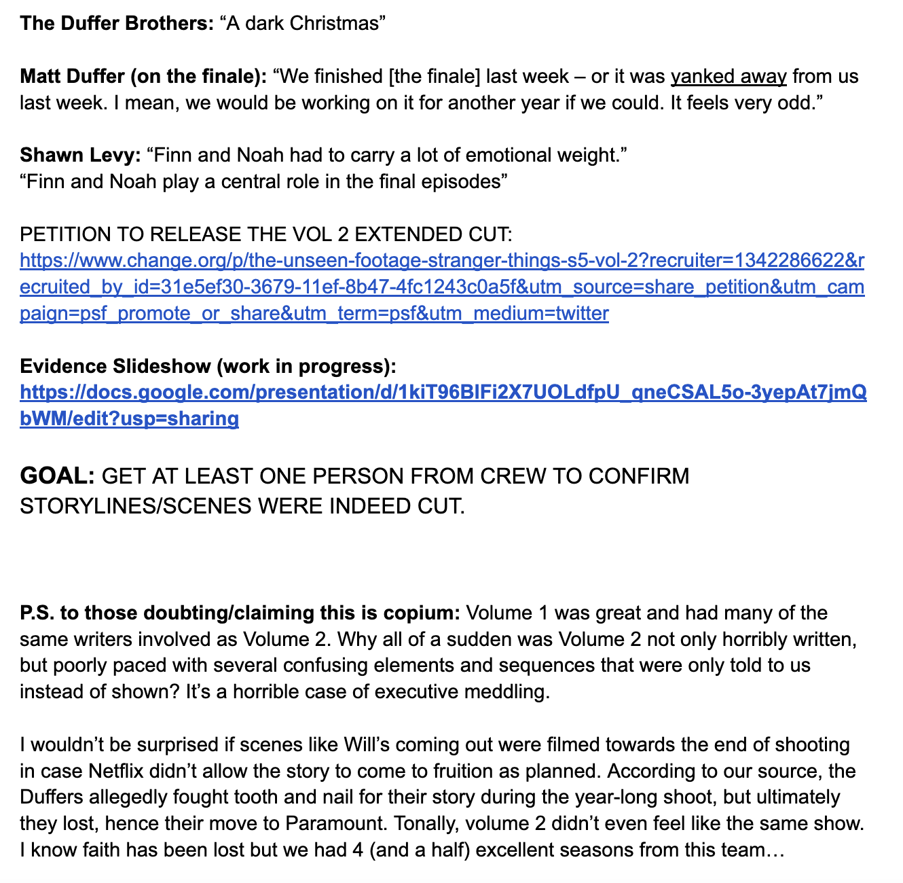
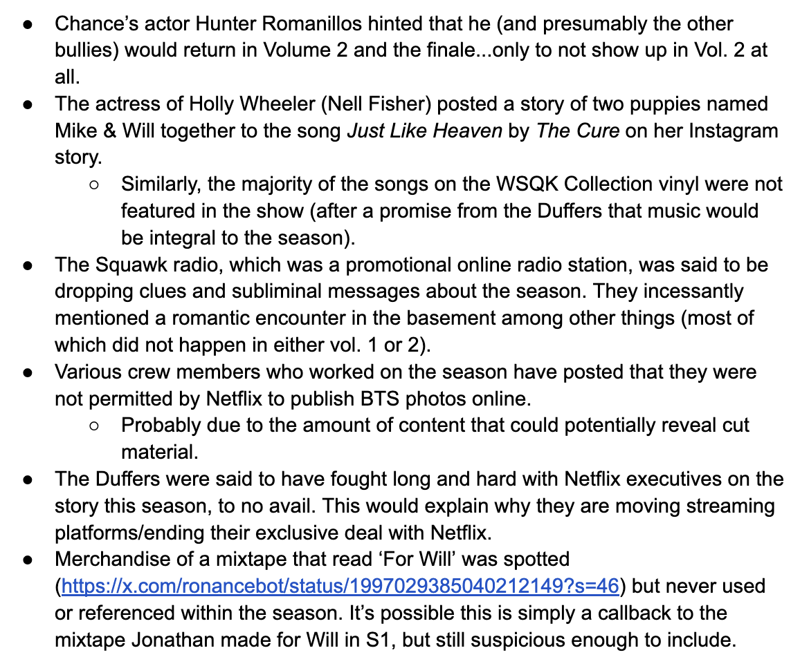
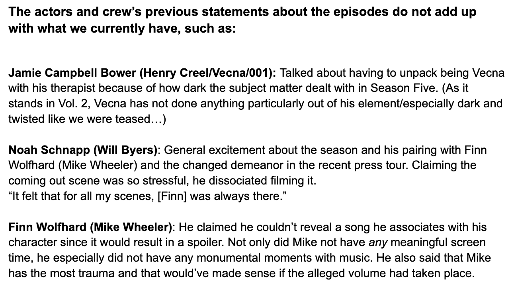
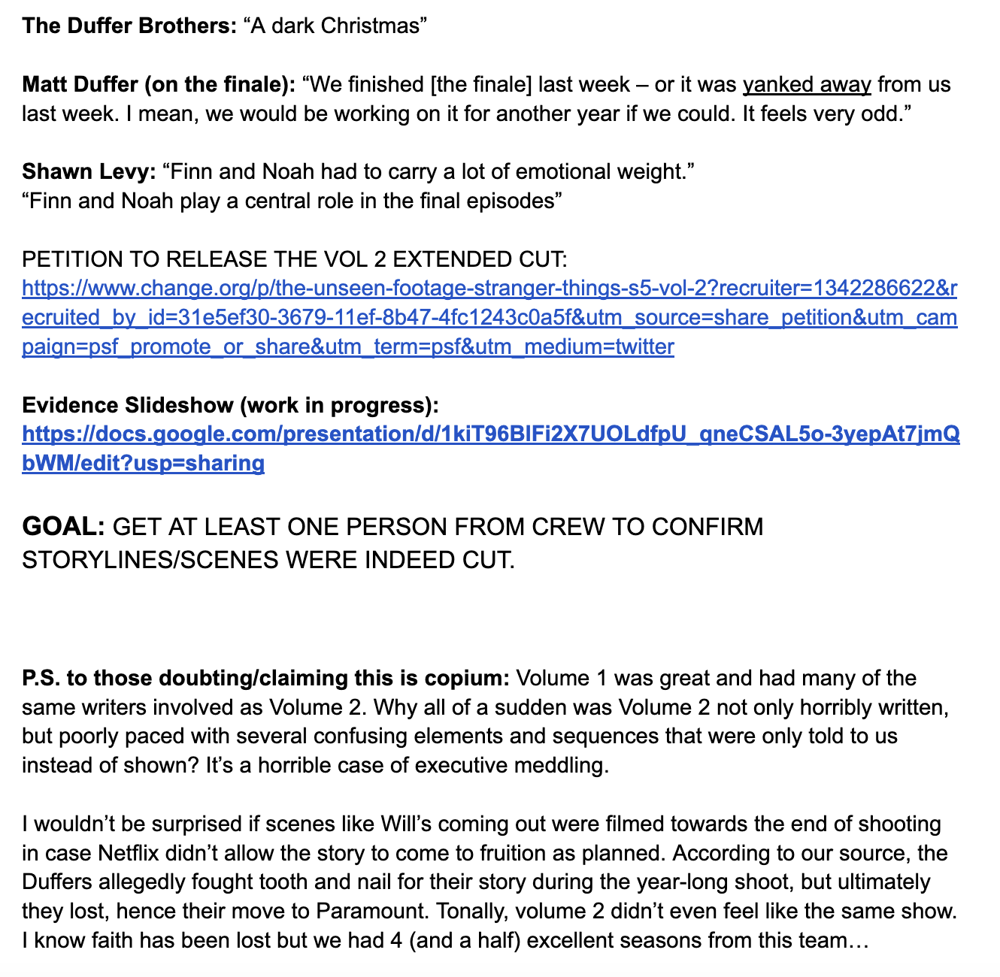

tv
29 dec 25
290,000 Stranger Things Fans have Signed a Petition Demanding Netflix to Release Alleged Unseen Footage

Photo by COURTESY OF NETFLIX/Courtesy of Netflix/Netflix © 2025 - © 2025 Netflix, Inc.
It's no secret that Stranger Things season 5 has left plenty of fans feeling underwhelmed. Some have taken this a step further and, in disbelief that this was the quality the beloved Netflix show has stooped to, claimed that huge cuts have been made to multiple areas of the show. This has produced what the change.org petition cites as a fear of 'some show that couldn't pull though due to it bad writing' (slightly ironic, I know). So is there some big conspiracy theory?
Randy Havens, Mr. Clarke in the show, doesn't think so. A recent Instagram story (pictured below) states that 'there's no secret snyder cut of the show', taking a stance against anyone claiming otherwise. 'Snyder cut' refers to 2021's 4 hour long Jack Snyder's Justice League, what the original 2017 film was intended to look like without the cuts and reshoots that whittled it down to only contain 30 minutes of Snyder's original footage. In short, a cut with all the original bits left in. Havens then proceeds to say 'please don't believe everything some random ass tells you on the internet', a useful piece of advice for everyone.
So what are the accusations based on? Alleged leaks, logic, and statements. Everything handily compiled by fans into one google doc, pictured below.
   





Regardless of whether rumours are true, the fans' need to grasp onto the hope that this wasn't the original intended outcome illustrates serious issues with the writing, I'm sure it's getting sweaty at Netflix right about now.